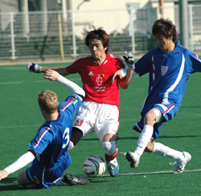
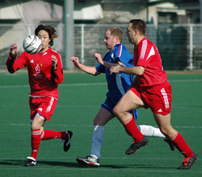
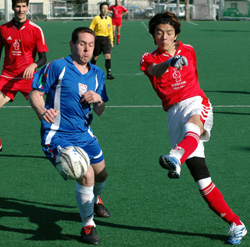
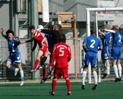

|
Hachioji Park, Sat 3rd Feb. After last week's frustrating draw against the French, BFC needed a big performance against their old rivals to preserve their slender lead at the top of the TML standings. They got one, with Terry, Taka and Brian Doyle gargantuan.
But it was going forward where BFC impressed most, Shosuke giving the Swiss nightmares from the start in his best showing in a dozen or so appearances for the club.
For someone as skinny as a Marlboro Light, it is a miracle he has not been broken in half yet after some of the challenges the poor lad has taken.
For such a frail chap, he is amazingly resilient. He may need to be. Twice during the game, Swiss players were heard to encourage team-mates to 'break his leg' as Shosuke sped past them. Charming.
Shosuke it was who put BFC 1-0 up inside five minutes, pouncing on a defensive slip to tuck the ball past the Swiss keeper. BFC's passing was as fluid in the opening 20 minutes as it had been hospital against the French.
Jon Day and Evans were buzzing all over the place with Taka and Terry surging forward in support. Terry pulled one shot wide, Taka headed a corner just over.
But a rash decision to take a quick free kick with none of the players ready for it 10 minutes before halftime undid BFC's good work in the first half.
The Swiss stole the ball and immediately swarmed up the pitch, Kirk knocking down a cross from substitute Karl to smash the ball into the roof of the net. Good finish. Basic error from BFC. Game on.
Cometh the hour, cometh the skinny Japanese lad. Shosuke found himself in space and, eschewing better options around him, went on another mazy one, skipping past two lunges before being clattered just inside the box. Pink Neil stepped up and calmly stroked in the peno. 2-1.

The Swiss missed a golden opportunity to equalise for a second time when Aoki blazed over from six yards after a rare moment of kamikaze defending from BFC. It proved costly.
BFC made it 3-1 in strange circumstances midway through the second half, Terry somehow passing to himself to beat the offside trap before Morson burst through to dispossess his team-mate and go on to score one of his trademark headless chicken goals.
Shosuke, whose decision-making is improving with every game, could have finished with four or five, seeing one fierce drive shave the bar and another effort brilliantly cleared off the line.
He did, however, put the icing on the cake for BFC by latching on to a superb ball from Taka to score with a cheeky lob five minutes from time.
A terrific result for BFC, with the back line deserving of praise. The way Brian stuck to Kirk like a bad smell was another contender for performance of the day.
However, with champions Hibs still holding three games in hand, even this victory will mean little unless BFC can consolidate their position by taking maximum points from their final six games. The Hibs still hold the dice. It's theirs to lose.
Report by Knackered Converse
|